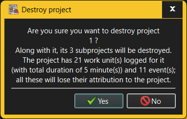

The Destroy Project dialog requests confirmation when an attempt is made to destroy an existing Project.

When destroying a Project, all its sub-projects will be destroyed along with it; any Activities and Tasks associated with the destroyed Projects will lose that association with a Project. As a consequence, any Work items and comments logged for these Activities and Tasks will lose their attribution to a specific Project. The Destroy Project dialog will therefore show just how much an impact the Project's destruction will have on the recorded work history.
Only someone with Administrator or Manage Workloads capabilities is allowed to destroy Projects. However, anyone who can log into a given workspace can see all Projects defined there.
See also: -